0x00 背景
0x01 引言
为庆祝母校 计算机与人工智能学院 的成立，特撰写本文。
相信不少同学已经从各种渠道了解过 AI、使用过 AI；当然也有部分同学对 AI 完全没有概念、很迷茫，这都没有关系。
本文不需要知道你任何理论知识，只是单纯地把我近年来的研究作品展示给大家，内容涵盖了 AI 在游戏、生活、媒体、绘画等多个领域，多角度展示 AI 的魅力，旨在让大家更真实地理解 AI 是什么、能做什么，激发学习兴趣。
0x02 百年机遇: 第四次工业革命
人类历史上曾经历三次工业革命，每一次都带来了科技的飞跃和生产力的提升。
在二十一世纪初，诸如大数据、物联网、云计算、生物技术等，这些 AI 赖以发展的基础产业，早已开始布局，人工智能已然成为第四股革命力量:
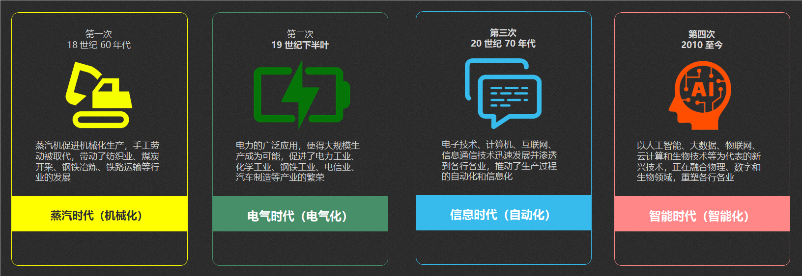
特别是去年 ChatGPT 爆火之后，各种 AI 大模型相继涌现，直接使得 AI 技术在各个行业多点开花，因而 2023 年也被称为「AI 元年」。
大家作为这个时代的见证者，已然站在了时代的风口。
0x10 安全宣导
0x11 AIGC
AIGC 就是 Artificial Intelligence Generated Content: 「人工智能生成内容」
很多同学应该都有刷抖音、头条、小红书的习惯，有没有发现从去年开始:
- 突然多了很多网络美女，但是样子都长得差不多，仔细一看却不是人类的手脚
- 突然冒出了一堆科普知识的自媒体，古今中外上下五千年无所不知无所不晓，而且还非常高产
- 还有更多的是起一个有争议性的标题，看图作文洋洋洒洒几千字八股论文，语气用词异常正经，而且它们的文案几乎都一样
这些都是 AIGC，现在的 AI 已经发展到可以基于几句文字、几张图片生成一堆以假乱真的内容，如果不是专业人士，很难辨别真假。
甚至有些自媒体还利用 AI 造谣，目的就是引流、希望利用 AI 风口快速变现，但这已经涉嫌违法犯罪了。
我不希望同学们学到 AI 后马上就面向监狱编程，为了规避不必要的麻烦，先给大家做一个安全宣导。
0x12 不正当案例
我做安全的这些年发现一个规律，大部分新兴技术在流行之前，背后的黑灰产已经活跃很久了。
譬如 AI 近年比较流行的几个领域: 游戏、交互聊天、绘画、多媒体，都被黑产渗透了，不得不承认他们对风口的嗅觉非常灵敏、对人性把握非常精准:
| AI 应用场景 | 正确使用 | 涉嫌违法 | 典型案例 |
|---|---|---|---|
| 游戏 | 强化学习训练、 智能NPC、反外挂 |
外挂 | 2021 使命召唤视觉 AI 外挂事件 |
| 交互 | 私人助理、智能客服/伴侣、 知识库、代码生成 |
垃圾内容，黑客大模型 | 2023 FraudGPT 自动生成恶意代码 （钓鱼、病毒、0day） |
| 绘画 | 服装模特、建筑图纸、 修复老照片、一文海报 |
一键脱衣 | 2019 DeepNude 羞辱女性事件 |
| 媒体 | 虚拟主播/偶像、一文广告、 同声传译、被拐寻亲 |
深度伪造诈骗 （换脸 + 拟声） |
2024 香港 Deepfake 诈骗案 |
0x13 反例-游戏: 视觉 AI 外挂
相信大家都很喜欢玩游戏，所以 CS、吃鸡 这些 FPS 游戏平常都接触不少，但是不是发现、越火爆的游戏外挂就越多 ？
在 2021 年的时候出现了一款名为 User Vision Pro 跨平台的视觉 AI 自瞄外挂，号称是不可检测且不可封禁的。
在当年 AI 还没大范围民用的时候，确实引起了不少轰动，所以作者很快就被请去喝茶了。
同年我也研究了一下怎么对抗这个外挂，所以下午会有一定篇幅介绍这个案例，这里先不展开。
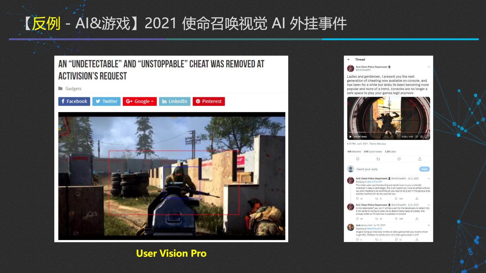
0x14 反例-交互: 黑客大模型
时间来到 2022 年底，人类史上具有里程碑意义的通用对话大模型 ChatGPT 诞生了，它在智能聊天、写文章、写代码等常用场景表现都非常出色，截至到目前都是 AI 大模型的天花板。
但有正必有反，次年就有人用大量黑客数据训练出了 FraudGPT，使得任何人都可以用自然语言来生成 无法检测的病毒脚本、勒索软件、极其逼真的钓鱼网站:
FraudGPT 直接降低了攻击门槛和成本，只需要每月 $200，它可以把一个普通人武装成一名黑客，这种 AI 攻击对互联网安全而言就是一次降维打击。
目前国内真正有能力与之抗衡的安全产品，寥寥无几，在未来 AI 安全应该是一个不错的就业选择。
0x15 反例-绘画: 一键脱衣
在 2022 年中，AI 绘画界的大佬 stable-diffusion 开源了。
但是真正掀起 AI 绘画风潮的，是 2023 年出现了一组使用它创作的「赛博Coser」，除了脸长得一模一样之外，画风非常写实细腻，马上吸引一大波不会画画的人进入画画赛道。
也是从那时候开始，小红书等自媒体平台上，就出现了大量的 AI 美女。但是因为国内执法比较严，你看到的美女已经是相对保守的了，国外一直都是毫无底线的。
早在 2019 年，AI 绘画就已经服务于黄色产业链了，最著名的就是 DeepNude 事件，任何人只要提供目标女性的一张照片，就能在几分钟之内强制把她衣服消除，而代价只需要 $1。
因为 DeepNude 严重违背了社会道德，恶意践踏女性尊严，很快就因为遭到剧烈的抵制被人轰下架了。
0x16 反例-媒体: 深度伪造诈骗
众所周知，自从美颜相机出现后，AI 换脸变得平民化，现在各平台的主播人均白富美。
近几年这些平台又开始整花活，冒出了不少「虚拟主播」，不仅仅是脸，声音、外形都可以重新打造，而且逼真程度堪比真人。
于是不法分子又嗅到了商机，他们可以从目标人物的公开影像中提取面部、声纹特征，甚至打电话给目标人物采取声音样本，以现在的 AI 克隆语音技术，只需要和他说 3 秒钟电话，你的声音就被复制了。
就在今年年初，香港一家英国跨国公司，被骗子用 AI 换脸和拟声 合成的视频会议，冒充总公司的 CFO，直接骗走了 2 亿港币:
0x17 量刑参考
针对前面 4 个典型案例，我国刑法是有对应量刑的:
| AI 应用场景 | 不当使用 | 典型案例 | 量刑 |
|---|---|---|---|
| 游戏 | 外挂 | 2021 使命召唤视觉 AI 外挂事件 | 非法控制计算机信息系统罪，可能处三年以下有期徒刑或者拘役 |
| 交互 | 黑客大模型 | 2023 FraudGPT 自动生成恶意代码 （钓鱼、病毒、0day） |
破坏计算机信息系统罪，可能处五年以下有期徒刑或者拘役 |
| 绘画 | 一键脱衣 | 2019 DeepNude 羞辱女性事件 | 侮辱罪、传播淫秽物品牟利罪，数罪并罚，可能处三年以下有期徒刑、拘役、管制或者剥夺政治权利 |
| 媒体 | 深度伪造诈骗 （换脸+拟声） |
2024 香港 Deepfake 诈骗案 | 诈骗罪，数额特别巨大，可能处十年以上有期徒刑或者无期徒刑，并处罚金或者没收财产 |
希望大家可以引以为戒，什么该做什么不该做，心里要有自己的一把尺，不要打破法律底线。
时刻记住: 「技术无善恶，用之应有道」
如果自己无法分辨能不能做，先查一下《中华人民共和国刑法》，但凡沾了一丢丢就不要再以身试法了
0x20 AI 应用展示
近几年我其实一直在尝试 AI 的各种应用场景，大体上可以归为 4 类:
- 游戏场景
- 日常工作学习的交互场景
- 绘画场景
- 多媒体场景
由于内容有点多，本文不会逐个案例都深入讲解实现原理，但是大部分案例的开头和结尾都有对应详细教程/材料的传送门，有兴趣的同学可自行展开
0x21 游戏: 反外挂研究
本节教程传送门: 《弹无虚发？视觉 AI 杀疯了！》
我做的第一个 AI 课题其实就是视觉 AI 的反外挂研究
契机是: 当年绝地求生（PUBG）异常火爆，我们车队每周末都会开黑，但是后来遇到的外挂越来越多。
有段时间简直神仙打架，什么穿墙、透视、路飞挂，甚至猖狂到开着飞天挂一路追着玩家兜售他们的外挂。
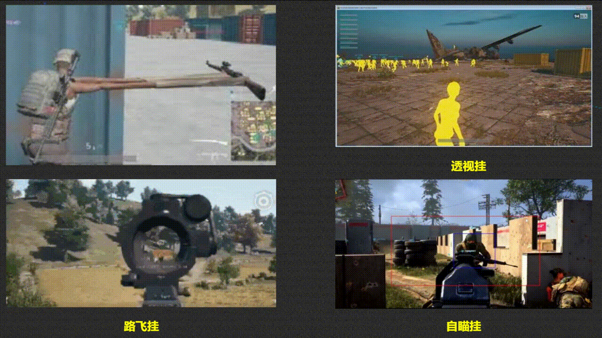
虽然官方下场封号后有所收敛，但是自瞄挂比较隐蔽，只在关键时放阴枪就很难杜绝了。
尤其在视觉 AI 自瞄外挂被爆出来之后，我们车队的小伙伴就说: “太离谱了，怪不得一直封不了，官方不作为，难道我们就没有对抗方法吗？”
但要想对抗外挂，首先得知道外挂是怎么实现的，对抗要有针对性，打蛇打七寸。
- 传统的外挂之所以能够被游戏检测到，主要是他们会修改内存或者网络封包，这些行为是在「游戏规则之内」，有迹可循
- 但是视觉 AI 和人类一样，通过分析屏幕的画面信息进行反馈，是独立存在于「游戏规则之外」的个体
如果让游戏检测坐在电脑的是人还是 AI，其难度相当于让二维的生物检测三维的存在，基本无解。
在当年，民用领域能够实现视觉 AI 的大模型并不多，我翻查了各种资料，终于找到了 OpenPose 人体姿态识别。
它核心原理是通过 Body25 等标注方式，把人体骨骼映射到每个坐标点，通过串连这些坐标，把画面中人体还原出来，从而精确识别到人物的各个部位在什么位置。
我花了短短的几个月，我就在人机环境中把 Demo 框架搭出来了：
备用视频源：youtube
在测试的画面中，左边是玩家肉眼看到的画面，右边是 AI 看到并分析的局部画面。
乍一看好像确实是那么回事，指哪打哪。
但是我测试下来发现，视觉 AI 外挂并没有黑产鼓吹得那么厉害，真实情况是：
- 只有跨平台通用是真的
- 使用场景局限在中近距离，太远的目标都糊成一个点了，AI 是分析不了的（所以视频里倍镜不离手）
- 隐蔽性也是被夸大了，确实它分析画面是在游戏之外，但是它的输入依赖鼠标驱动，这是游戏之内的，而鼠标异常是可以被检测的
所以我当时测评给的结论是: 视觉 AI 就是一个 「反应快 的 聋子 + 近视眼」
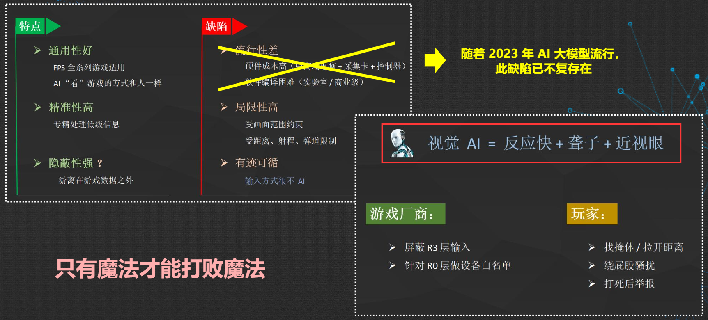
需要注意的是，当年因为 AI 模型对设备依赖性比较强，我认为流通性较差；但随着 2023 年 AI 大模型的流行，这个缺陷已经不复存在了。
AI 技术在这两年呈现出爆发式进化，在未来，视觉 AI 的其他缺陷会不会也被攻克 ？ 我不知道。
但有一点可以肯定的是： 只有魔法才能打败魔法。
目前国内外的反外挂工具普遍都是在传统检测工具的基础上、添加了行为分析模型或机器学习模型，并没有从根本上解决问题。一个可行的研究方向是，在游戏画面中加入人眼不可察觉的对抗性噪声，干扰视觉 AI 的识别，但是尚未有成熟的技术。在未来，反 AI 外挂应该是不错的赛道，维护游戏界和平的任务就交给你们了 …
本节教程公众号二维码

0x22 游戏: Gym 智能体训练
本节教程传送门: 《「Gym 课程笔记 00」如何教 AI 玩游戏 ？》
但是 AI 的知识比较繁杂，想学好并不容易，尤其是训练的算法和理论，理解起来比较晦涩，有没有方法提高学习效率呢 ？
还真有，OpenAI 推出了一个强化学习训练的库: Gym
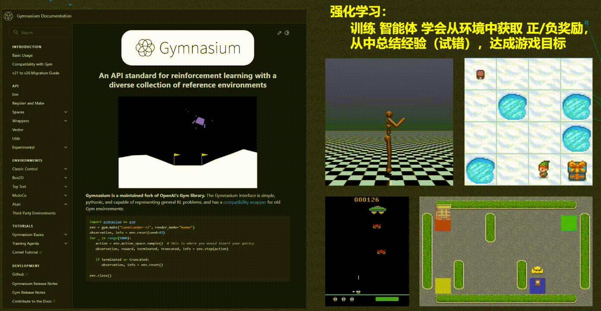
所谓的「强化学习」，就好比你刚买了一个新游戏，不看任何攻略教程，在游玩过程中，通过游戏给你反馈的正负奖励，例如什么操作可以获取金币、什么操作会招来死亡等等。你在不断试错中总结经验，最终通关。
现在 Gym 把 “你” 换成了 “智能体” 。
Gym 的课程提供了一堆小游戏的预设环境，使得我们在使用 Gym 学习 AI 算法的时候，无需关心游戏怎么开发和怎么交互的，只需要关注 AI 算法本身。
课程设计是由浅入深的，只需要按顺序训练出每个小游戏的 AI 模型，就掌握一些常用的 AI 理论知识了，真正的做到了寓教于乐。
我之前用 Gym 训练了两个智能体，让它自主玩游戏:
- 贪吃蛇：训练智能体铺满全部格子
- 宝可梦：训练智能体学会寻路、对话、对战、捕获精灵等等
本节教程公众号二维码

0x23 游戏: AI 小镇
有没有想过，如果一直训练的话， AI 智能体最终会变成什么样呢？
之前热播的动画《刀剑神域》，在最终章里面，主角爱丽丝就是人工制造的 AI，通过自主学习进化后拥有了人类的感情和意识。
而在国外就有研究者构建了一个名为「AI 小镇」的项目，投放了 25 个 AI 智能体在小镇上生活。
除了最开始给每个智能体赋予角色人设之外，不再对他们的行动进行干涉。过了一段时间后，发现他们有工作，能组织社交，结交新朋友，甚至会八卦：
备用视频源：公众号
我最近上去发现，他们现在最热衷的事情就是聊八卦和吹牛，科技树点歪了 … 猜测是 NPC 生存不需要争夺资源，就产生了惰性，从这个角度看好像又越来越像人了 …
0x24 工作: 人脸识别自动考勤
本节教程传送门: 《AI 全自动考勤原理与实现》
我们公司上下班需要用手机刷脸打卡签到，但是有段时间我经常忘记打卡，于是在前年，我就自己做了一个 AI 自动打卡系统。
大概原理是:
- 我预先训练好我自己的脸部模型，放到本地数据库里
- 然后电脑长期运行一个脚本，到点打卡的时候，就自动开启摄像头，识别在工位上的是不是我本人
- 如果是我本人，脚本就会通过数据线，自动解锁手机，然后运行考勤 APP，完成打卡
其实是很简单的一个人脸识别系统。唯一注意的是，不要把我的脸识别为别人就可以了，不然别人就能解锁我的手机了。
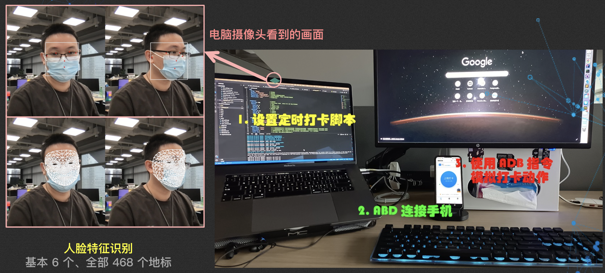
可以看到左边就是 AI 通过摄像头正在分析我的脸部特征：人脸基本特征有 6 个，双眼双耳口鼻；全部特征有 468 个。
如果只是人脸识别的话，6 个特征就足够了，但是要做 AI 换脸的话必须全部特征都用上。
整个考勤过程的演示如下:
本节教程公众号二维码
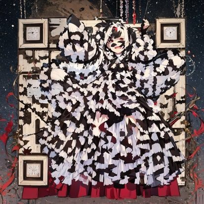
0x25 生活: 表情管理大师
既然提到人脸，顺便提一下最近发布的表情控制 AI —— FacePoke 。
- 如果你喜欢分享短视频或照片，它就很适合用来做一些搞怪的素材、表情包
- 或者说你拍照姿势环境都不错、偏偏把脸拍歪了，它也能帮你修好
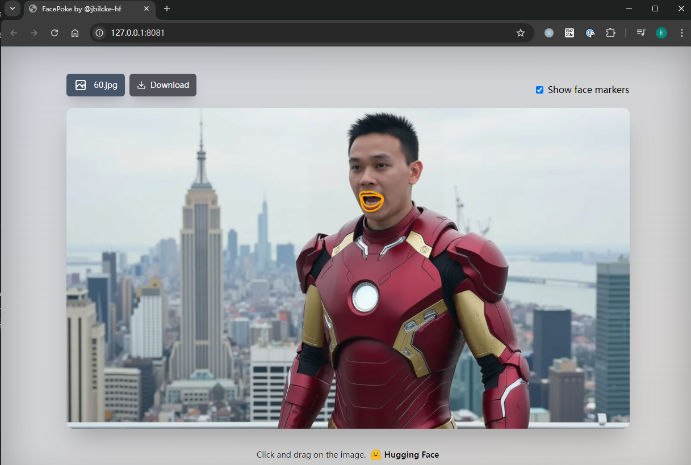
FacePoke 的操作极其简单，导入图片后，它会自动识别脸部，只要选中任意五官拖拽鼠标，就可以实现：
- 抬头 / 低头 / 转头
- 睁眼 / 闭眼 / 看左 / 看右
- 张嘴 / 闭嘴 / O 嘴举眉 / 皱眉
妥妥的表情管理大师：
备用视频源：公众号
0x26 生活: 微信私人助理
在去年 ChatGPT 爆火后，相信大部分人都想拥有一个移动的 AI 私人助理，随时把各种问题丢给他，就能马上给你答案。
但是受限于国内政策，ChatGPT 在国内用不了，自己搭建又无从下手。
其实现在微信就能很简单地接入 AI，在 Github 和 码云 都上开源了一个名为 chatgpt-on-wechat 的项目。
你只需要把源码下载到本地运行，然后注册一个新的微信，扫码登录，那么这个微信就会变成一个 AI。
它可以帮你实现写文章、画画、查资料、写代码，甚至可以变成你的虚拟伴侣。
需要注意的是：
- 你可以自己用，但是不要在微信群提供服务给别人用，因为你控制不了别人可能会问一些违法犯罪的问题
- 避免微信秋后算账，千万不要把你的大号变成 AI，用小号玩一下还是可以的
备用视频源：公众号
0x27 工作: 自动生成代码
现在市面上有不少 AI 生成代码的工具，我自己比较常用的是 Cursor。
大部分的 AI 生成代码工具都支持写一些简单的脚本、代码优化、单元测试用例生成、前端页面生成等，用来消除重复劳动、提升工作效率还是很方便的。
但除此之外，Cursor 还能分析图片和工程目录结构，譬如你有一个很喜欢的网站风格，文字很难描述，只要就截图给 Cursor，它就能克隆一个几乎一样的网站。
备用视频源：公众号
但是这类工具我不太推荐给还在学生时期的同学（可以了解，但尽量不要用），主要出于两方面考量：
- 它不是免费的，基本都是试用转付费的模式，每月会多一笔开销
- 在学生时期多写代码培养一下编程思维是有好处的，不要用 AI 来偷懒
0x28 视频: 打破次元的创意短片
本节教程传送门: 《「SD 零基础入门 12」AI 动画初探：整个宇宙为你而闪烁》
去年我们公司举办了第二届黑客马拉松，正巧当时我在出关于 AI 绘画 Stable-Diffusion 的系列教程，所以主办方就找到我说: “你看能不能帮我们参赛的队伍用 AI 绘画做一辑宣传视频，就是那种真人渐变到二次元的效果”：
其实利用 Stable-Diffusion 的扩散原理就能做到真人二次元化，我们前面提到的 赛博Coser 就是这么做的。
但是 Stable-Diffusion 只能得到最后二次元化的结果，它是静态的图片；中间的扩散过程几乎都是雪花，没有办法做到渐变画面的感觉。
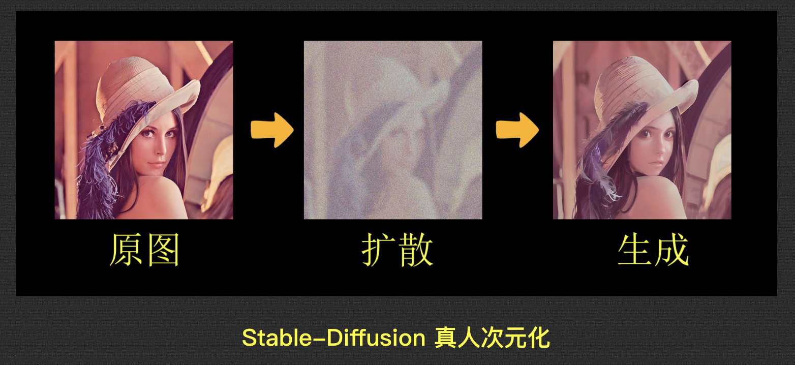
这个需求如果放到现在是很好做的，因为有大量的 AI 动画生成工具可以选择，譬如： Luma AI 就可以把构图相似的两张图片，通过首尾帧连接，自动生成中间过渡帧。
但是在当时，因为没有任何成熟的 AI 视频模型，所以绕了点弯路、组合了 SD、Deforum、EbSynth 三款工具实现了类似的效果：
备用视频源：youtube
本节教程公众号二维码
0x29 音频: 全语种拟声合成
前面在介绍深度伪造诈骗的时候，已经提到过 AI 拟声合成。
当时我说: “以现在的技术，只需要打电话给目标人物，跟他对话 3 秒，就能克隆他的声音。”
这句话不是危言耸听。
去年有段时间，很流行克隆明星声音：孙燕姿、周杰伦用潮汕话唱粤语歌，各种在违法边缘上疯狂试探。
但是那时候的声音克隆是需要训练模型的，明星或主播因为有比较多的公开映像素材，所以就成为了克隆的重灾区。
一般情况下，是很难克隆普通人的声音的：一是素材不够，二是显卡不行。
但是 CosyVoice 出现后，训练声音模型就不再是必要条件了。任何人，只要简单录制 3 秒以上的音频，输入到 CosyVoice，它就能推理这个人的音色和语调，直接生成其他语种的声音。
我在今年中秋的时候刚好接触到了 CosyVoice，当时随口录了一段普通话，不到几分钟它就生成了日语、英语、韩语、粤语 4 个版本，结合视频会议等场景还是很有前景的 ：
备用视频源：公众号
0x2A 绘画: 朋友圈写真自由
本节教程传送门: 《「AI 写真自由」如何在朋友圈正式出道、成为最瞩目的仔 ？》
在今年 8 月， Stable-Diffusion 的团队创立了黑森林实验室，并推出了全新的文生图大模型 FLUX，据说生图性能和质量都有了极大提升。
由于 FLUX 天然可以通过 Replicate 平台在线上训练模型和出图，所以它不像 Stable-Diffusion 一样依赖本地高配置的显卡。
同时 Replicate 也把 Stable-Diffusion 的操作习惯保留下来了，因此迁移学习的成本很低，我立马就尝试做了一套自己的 2.5D 写真。
要做自己的写真，首先需要训练一个自己的 LoRA 模型，只需要提供至少 12 张各个角度的大头照给 FLUX ，大概花半小时训练成功了：
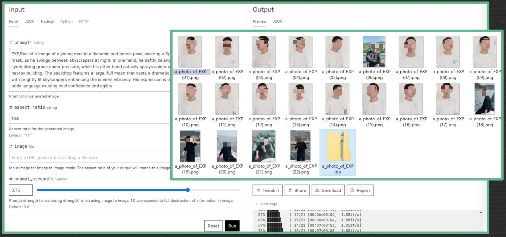
然后让 ChatGPT 帮我生成各种动漫角色的中二提示词，诸如：蜘蛛侠送月饼、阿修罗索隆、哈利波特与死咒术、终极铁克人 Disco 等等：
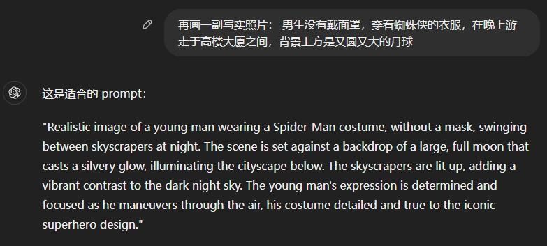
最后把 LoRA 模型和提示词都丢给 Replicate 出图，很快就得到了各种风格的炫酷写真，直接就可以在朋友圈出道了呢：
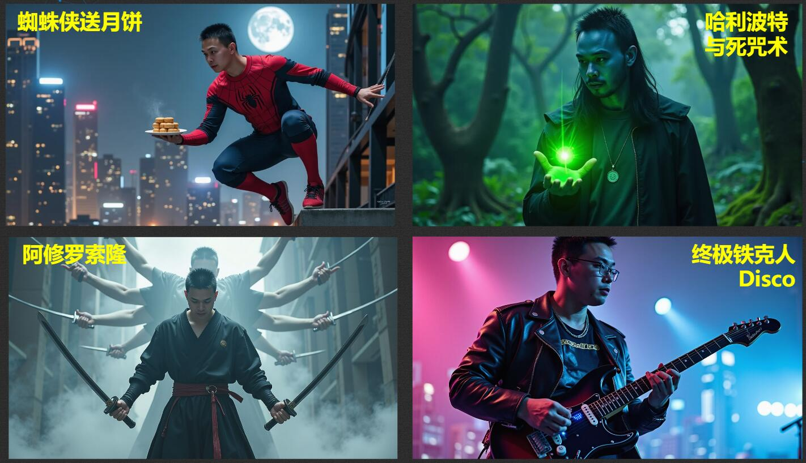
如果再配合前面的 FacePoke 进行表情管理，个人表情包素材也都自由了
本节教程公众号二维码
0x2B 绘画: 创意二维码
本节教程传送门: 《「SD 零基础入门 11」ControlNet 进阶：打造炫酷的艺术字和二维码》
不知有没有同学留意到，前面每个案例末尾附带的二维码，不是传统的黑白或彩色二维码，里面是有图像的，譬如这就是一个夜空下穿着白色裙子的女生：
这种构图与二维码与融为一体的图像，就是用 AI 生成的 “可扫码图像” 。
摄像头在扫码二维码时，主要依赖明暗度去识别码内信息，而明暗度不一定是黑白色才能拥有的，其他颜色也拥有明暗度。
而 “可扫码图像” 的原理很简单，想象有两张纸重叠在一起，一张是白纸，另一张上面印了一个黑白色的二维码:
- 当我们在使用白纸上绘制图像时（用 Stable-Diffusion）
- 强制保持二维码区域的明暗度（用 ControlNet）
- 此时再画画，就可以让二维码浑然天成地融入图像中
需要注意的是，AI 擅长的是创造，所以:
- 越简单的二维码，因为像素点少，给 AI 施加的约束力就少，就更容易出图
- 反之越复杂的二维码，因为携带大量的信息导致像素点密密麻麻，AI 创作空间被挤压了，难联想到有意义的图片，出图就比较困难
本节教程公众号二维码
0x2C 绘画: 创意艺术字
同样的原理，可以应用到艺术字，最后大家猜猜这幅画上有什么字 ：
答案点我
猜中了吗 ？是 “一键三连” 哦 ：
0xE0 寄语
学海无涯，AI 的知识非常多，我给大家揭示的只是冰山一角、帮同学们开阔一下眼界，未来 AI 的真正潜力还得依赖你们自己去发掘。
之前有同学看了我公众号的一些教程，就私聊我说: “看着教程看不懂，也不知道哪里不懂，自己这不行、那不行，觉得自己不是这块料”。
给人感觉就是、他已经陷入了深度自我怀疑中。
但我想说，人三十而立、四十才不惑，一时迷茫是正常的，但是不能质疑自己有问题。
我最近才听到一位 Up 主说过一段话挺好的，既回答了这位同学的疑问、也正好可以作为这篇文章的 Endding。
他是这样说的:
你们现在遇到的所有问题都不叫问题，它就是两个字，不会。
你们不能拿自己没有雕琢过的原始形状、
去对比人家一刀一刀专业刻画出来的完美结果，然后说自己是有问题的。
你们要做的是，接受自己不同的形状，
去雕刻它、去创造它，一刀一刀的刻好它，
最后呈现出来的结果才是专属于你自己形状的、最完美的你，
所以你们都要加油，成为最好的自己！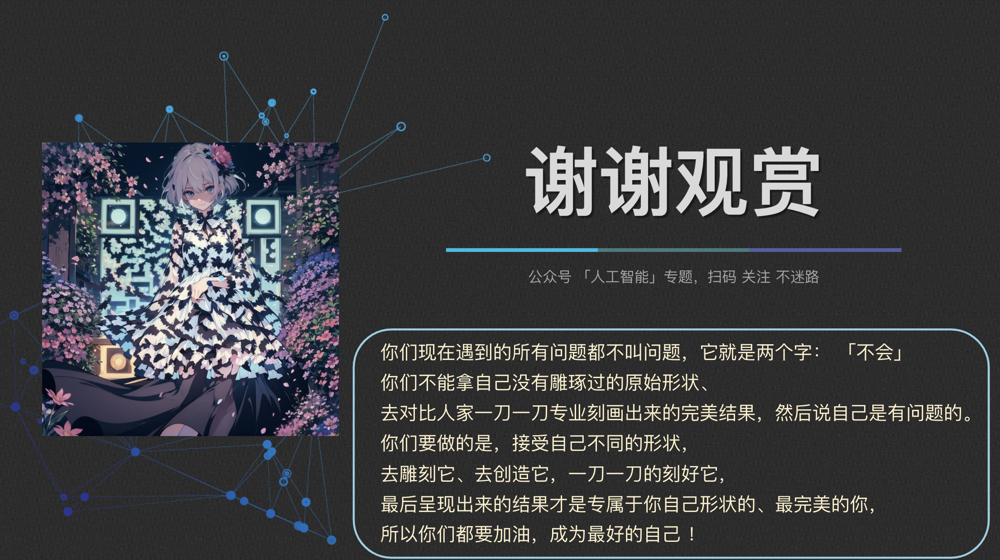
0xF0 相关资料汇总
- 2019 DeepNude 羞辱女性事件
- 2021 使命召唤视觉 AI 外挂事件
- 2023 FraudGPT 自动生成恶意代码
- 2024 香港 Deepfake 诈骗案
- 《中华人民共和国刑法》
- 《弹无虚发？视觉 AI 杀疯了！》
- 《「Gym 课程笔记 00」如何教 AI 玩游戏 ？》
- 《AI 全自动考勤原理与实现》
- 《「SD 零基础入门 01」AI 绘画原理与工具》
- 《「SD 零基础入门 05」图生图：突破次元圈限制》
- 《「SD 零基础入门 09」LoRA 训练：不会炼丹的魔法师不是一个好画家》
- 《「SD 零基础入门 11」ControlNet 进阶：打造炫酷的艺术字和二维码》
- 《「SD 零基础入门 12」AI 动画初探：整个宇宙为你而闪烁》
- 《「AI 写真自由」如何在朋友圈正式出道、成为最瞩目的仔 ？》
以上所有内容在我公众号的「人工智能」专题中都能找到详细教程，大家如果想深入了解的话，可以扫码关注不迷路。
| 博客 | 公众号 |
|---|---|